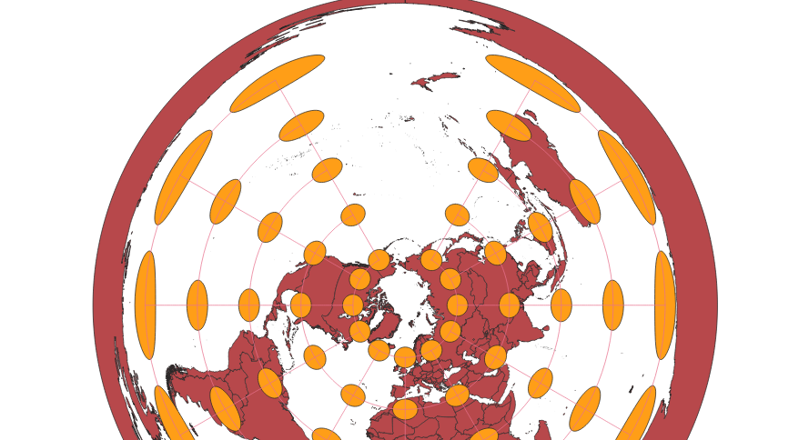

In this project I learned how to display images in different projections
Describe in your own words how you displayed the map in different projections using QGIS
In QGIS, you can search for hundreds of different projections of the world map. I used this feature to apply different projections that I searched for to one map and created a png file of each projection I found.
WGS84 Projection
This map becomes more distorted the closer you get to the poles, causing this area to appear much wider than it actually is .

Aitoff Projection
This map becomes more distorted as you get farther away from the intersection between the Equator and Prime Meridian, which is the center of the map. The map is shaped like an ellipsoid in order to better represent the shape of the Earth.

Pseudo-Mercator Projection
This map increases in distortion as you get closer to the poles, as the closer you get to the north or south pole, the larger the landmasses become.

Sphere Winkel Projection
This map has minimal distortion, with it only being really noticable towards the poles.

World Cylindrical Equal Area Projection
A majority of this map's distortion occurs near the poles. Most of the map seems to be rather undistorted, and there appears to be little to none veritical distortion at all. However, in order to get the map to be a more rectangular shape, the area near the poles has be significantly widened, causing it to have a streched appearence. Due to the fact that most of the distortion appears toward the top and the bottom, this map shows an accurate and undistorted view of the majority of the world, with an emphasis on the parts that are more inhabited.
World Equidistant Conic Projection
This is a conic projection that is centered at the north pole. The area around the center has little distortation, but the distortion increases as the map gets farther away from its center. it becomes.

North Pole Azimuthal Equidistant Projection
This projection has its center at the north pole, with distortion increasing as you get closer to the south pole. Due to it being an azimuthal projection, Antartica is actually portrayed as the border of the map, causing it to become almost unrecognizable.

World Craster Parabolic Projection
This projection has little to none distortion near the equator, but becomes much more distorted as you get to the poles. Both the eastern and western hemispheres are parabola shaped.
Guam Geodetic Triangulation Network 1963 Projection
This map is is a azimuthal projection centered in Guam, meaning that distortion increases as the distance from Guam increases and that Guam is the centerpoint of the map.
Data used for this project
Download Natrual Earth 1:10m Cultural Vector